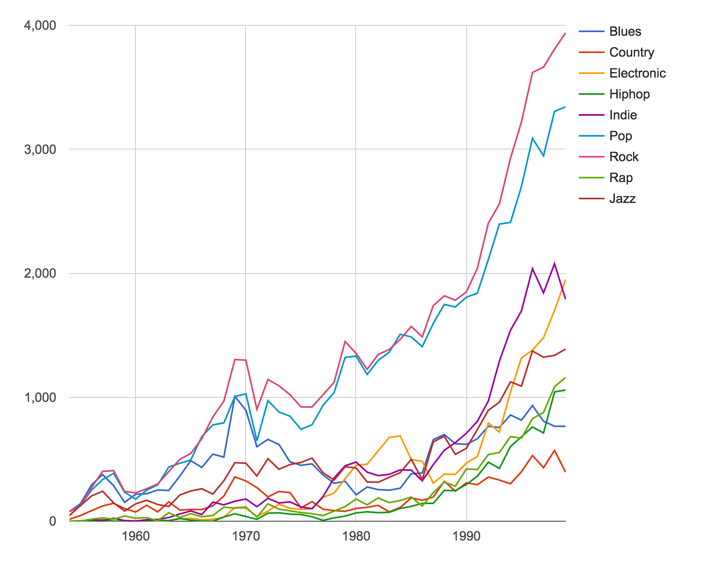

Arden Davis

Interactive Designer + Developer
Music Infographic

I created this data visualization to provide insight into genre popularity by incluing events that impacted music history. Prompting it with artists and years, I consulted ChatGPT for specifics.
image source: Music Genres Over the Decades (shouvikmani.github.io)
Chart Redesign: I redesigned this chart which captures the # of hit songs in each of these genres, by year.